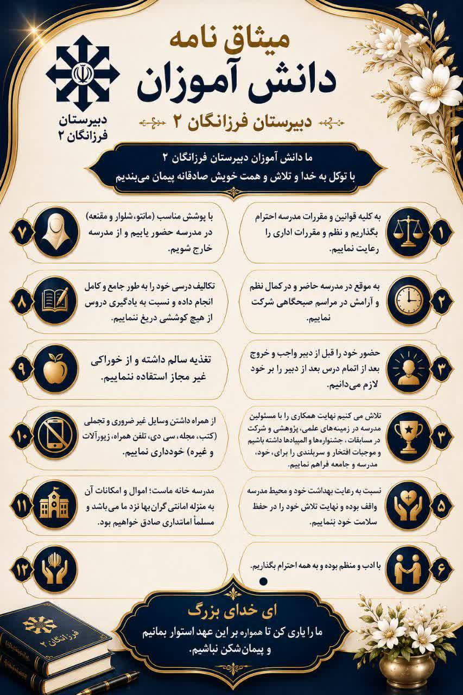

سند ثابت مدرسه
میثاقنامه و اسناد مدرسه
اسناد ثابت مدرسه از اطلاعیهها جدا شدهاند و با نمایش بزرگ و خوانا در دسترس هستند.
مشاهده اسناد ←جایی برای رشد علمی، فرهنگی و شخصیتی دانشآموزانی که برای ساختن آینده آماده میشوند؛ با تمرکز ویژه بر مسیر کنکور، پژوهش، خلاقیت و پرورش استعداد.
افتخارات علمی، قرآنی، فرهنگی، هنری و کنکوری را یکجا ببینید.
پیامهای صوتی مشاور برای مسیر مطالعه و کنکور.
از کلاس و کارنامه تا فایلها، رضایتنامهها و ارزیابی جایگاه آموزشی؛ همه در پنل شخصی.

اسناد ثابت مدرسه از اطلاعیهها جدا شدهاند و با نمایش بزرگ و خوانا در دسترس هستند.
مشاهده اسناد ←

پنل دانشآموز در صفحه اصلی پررنگ نیست؛ فقط یک دسترسی کوتاه دارد. پس از ورود، دانشآموز داشبورد شخصی خود را میبیند: کلاسها، کارنامه، معدل، جایگاه در کلاس، امتحانات، فایلها، رضایتنامهها و صدای مشاور.
ورود به پنل ←حکمرانی دادهمحور، علوم اعصاب، طراحی دارو، زبانهای خارجی و سایر رقابتهای علمی.
مشاهده افتخارات علمی ←مفاهیم، قرائت، حفظ، نهجالبلاغه، احکام، دعاخوانی و دیگر رشتههای قرآنی و مذهبی.
مشاهده افتخارات قرآنی ←جشنوارهها، مسابقات فرهنگی و هنری، امید فردا، فردوسی و فعالیتهای پرورشی.
مشاهده افتخارات فرهنگی ←قبولیهای ارزشمند و مسیرهای موفقیت تحصیلی.
کارسوقها، رویدادهای ملی و پروژههای پژوهشی.
افتخارات شهرستانی، قطبی و کشوری.
جشنوارهها و مسابقات فرهنگی و هنری.
پیامهای صوتی مشاور، توصیههای مطالعه، مدیریت استرس، برنامهریزی و نکتههای کوتاه برای دانشآموزان.
پنل مشاور ←


برای انتقاد، پیشنهاد یا درخواست، پیام خود را ارسال کنید. همچنین میتوانید مستقیم در ایتا با مسئول فناوری مدرسه در ارتباط باشید.